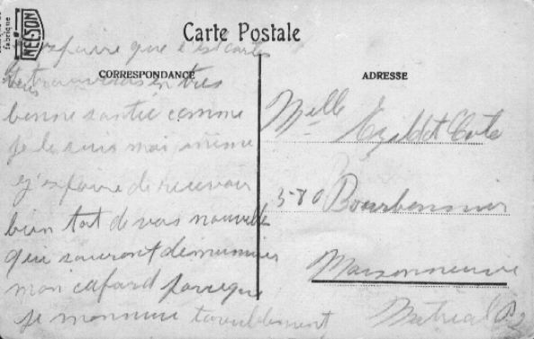

2ème de
3 cartes de Namur le 19 février 1919
J’espaire que
c’est cartes vous
Mlle Ezildat Cote
Trouverons en tres
bonne santée
580 Bourbonnier
Comme je le suis
moi-même.
Maisonneuve
J’espaire de
recevoir bien tot
Montreal P.Q.
De vos nouvelle qui
sauront
Diminuer mon cafard
parce que
Je mennuie terriblement
J’espère
que ces cartes vous trou-
Mlle Ézilda Côté
veront en très bonne santé comme 580 Bourbonnière
je le suis moi-même. J’espère de Maisonneuve
recevoir bientôt de vos nouvelles Montréal P.Q.
qui sauront diminuer mon cafard
parce que je m’ennuie terriblement